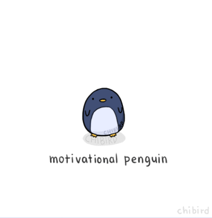

<h2 mat-dialog-title *ngIf="data.ispass==true">成功完成，真是太厉害了！</h2>
<h2 mat-dialog-title *ngIf="data.ispass==false">没有完成呢，请再思考思考</h2>
<div mat-dialog-content>
    
    
</div>
<mat-dialog-actions align="end">
  <button mat-button mat-dialog-close>OK</button>
</mat-dialog-actions>
